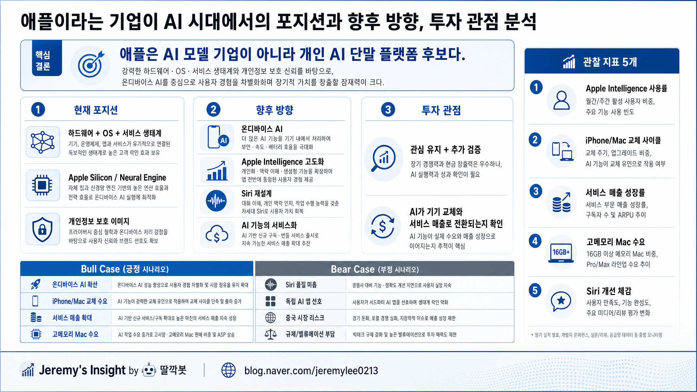

보고서모드 · 해당 분야 20년차 시니어 전문가 관점
애플 AI 시대 포지션과 향후 방향 투자 관점 보고서

1. 핵심 결론
애플은 AI 모델 성능 자체로 승부하는 기업이라기보다, AI를 개인 기기·OS·서비스에 배포하는 플랫폼 기업에 가깝다.
향후 핵심 방향은 온디바이스 AI, Apple Intelligence 고도화, Siri 재설계, 서비스 생태계 확장이다.
투자 관점에서는 기대감보다 AI가 기기 교체와 서비스 매출로 전환되는지 확인해야 한다.
2. 한 장 요약
| 항목 | 내용 |
|---|---|
| 현재 이슈 | AI 경쟁이 모델 성능에서 사용자 접점과 배포력으로 확장 중 |
| 핵심 배경 | 하드웨어, OS, 앱 생태계, 개인정보 보호 이미지를 통합 보유 |
| 핵심 포인트 | 모델 1등보다 개인 AI 단말 플랫폼이 될 수 있는지가 중요 |
| 기회/장점 | 온디바이스 AI, 기기 교체 수요, 서비스 매출 확장 |
| 리스크/주의점 | Siri 품질, 독립 AI 앱 선호, 중국·규제·밸류에이션 부담 |
| 최종 판단 | 관심 유지. 실사용 지표와 실적 전환 확인 필요 |
3. 쉬운 개념 설명
AI 시대의 애플을 볼 때 질문을 바꿔야 한다. “애플이 OpenAI보다 좋은 모델을 만들 수 있나?”보다 중요한 질문은 “AI가 아이폰, 맥, 아이패드를 다시 사야 할 이유가 될 수 있나?”다.
애플의 강점은 AI 모델 자체보다 사용자 손 안에 있는 기기와 OS를 통제한다는 점이다.
4. 핵심 분석
| 분석 축 | 판단 |
|---|---|
| 포지션 | 모델 기업이 아니라 개인 AI 단말 플랫폼 후보 |
| 방향성 | 온디바이스 AI와 Apple Intelligence를 OS 경험에 통합 |
| 수익화 경로 | 신형 iPhone/Mac 교체 이유와 서비스 매출로 연결 필요 |
| 검증 포인트 | 실제 사용률, Siri 체감, 제품 판매 지표 |
5. 기회와 리스크
| 기회/장점 | 리스크/주의점 |
|---|---|
| Apple Silicon과 Neural Engine | Siri와 Apple Intelligence 품질 미흡 가능성 |
| 거대한 기기·OS 사용자 접점 | 독립 AI 앱 선호 가능성 |
| 개인정보 보호 이미지 | 중국 시장, 앱스토어 규제, 밸류에이션 부담 |
6. 관찰 체크리스트
| 항목 | 판단 | 해석 |
|---|---|---|
| 모델 경쟁력 | 중립 | 자체 모델 1등보다 통합 경험이 중요 |
| 사용자 접점 | 강점 | 수십억 대 기기와 OS 생태계 보유 |
| 수익화 가능성 | 검증 필요 | 기기 교체와 서비스 매출로 이어져야 함 |
| 투자 판단 | 관심 유지 | 기대감보다 실사용 지표 확인 우선 |
최종 판단: 관심 유지 + 추가 검증. Apple Intelligence가 실제 기기 교체와 서비스 매출로 이어지는지 확인해야 한다.
Jeremy's Insight by 🤖 딸깍봇
https://blog.naver.com/jeremylee0213
https://blog.naver.com/jeremylee0213